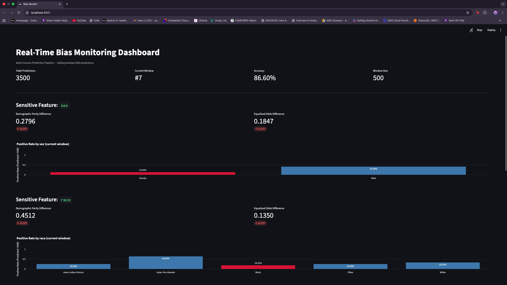
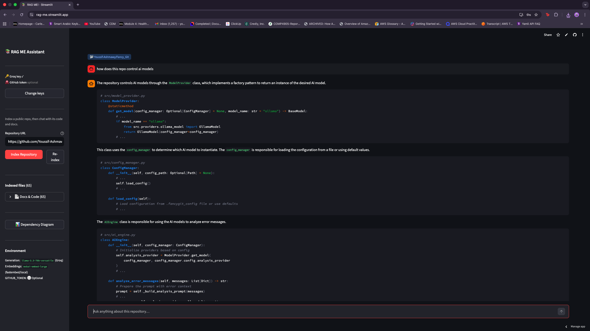
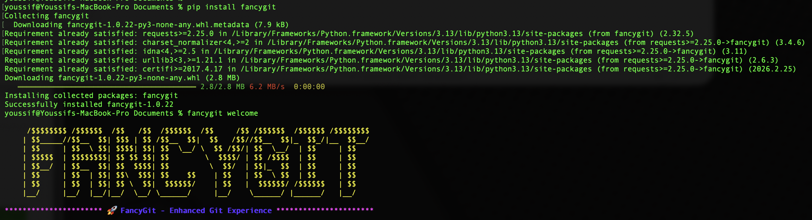
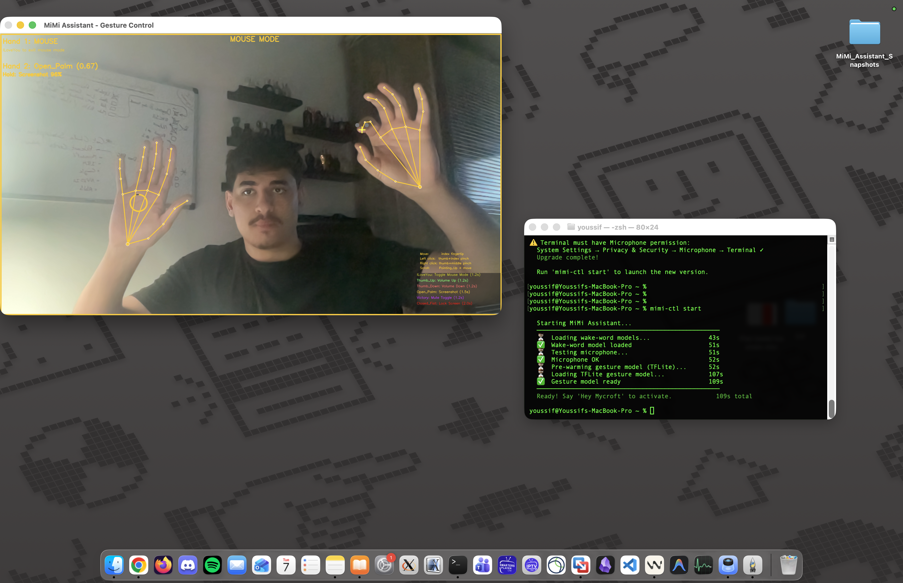
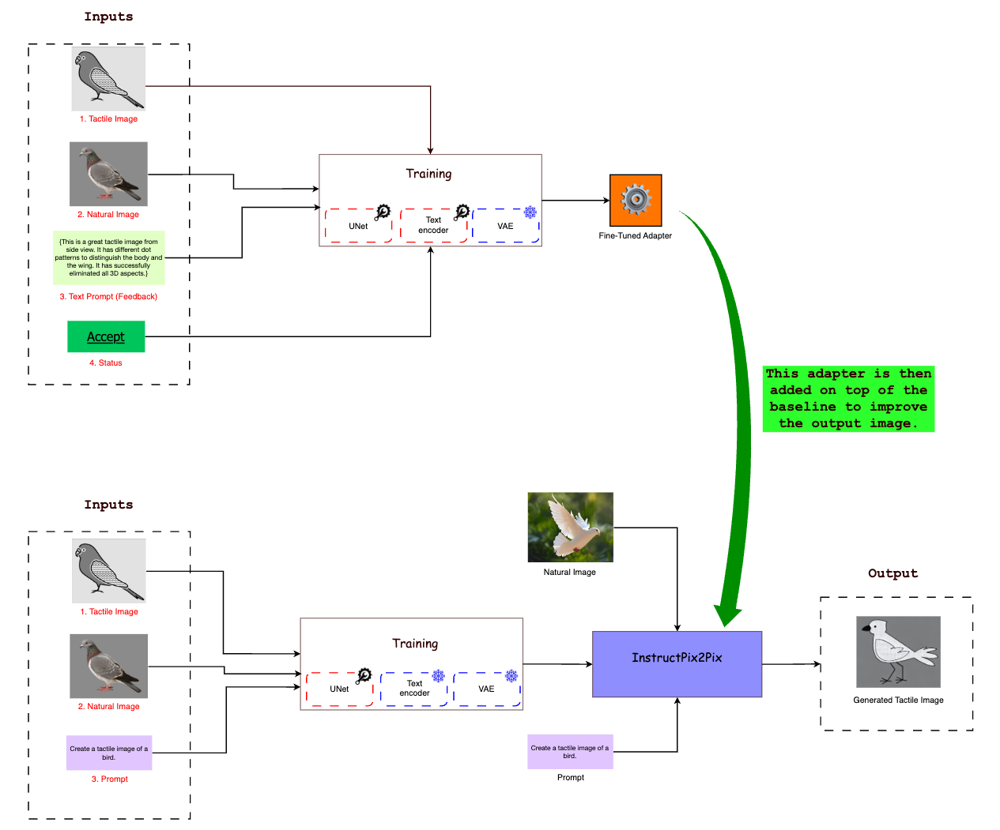
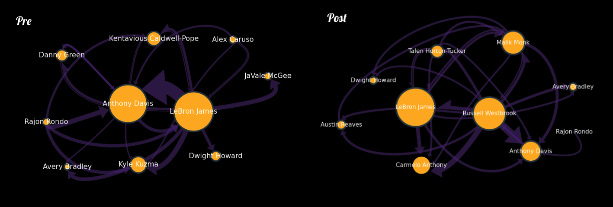
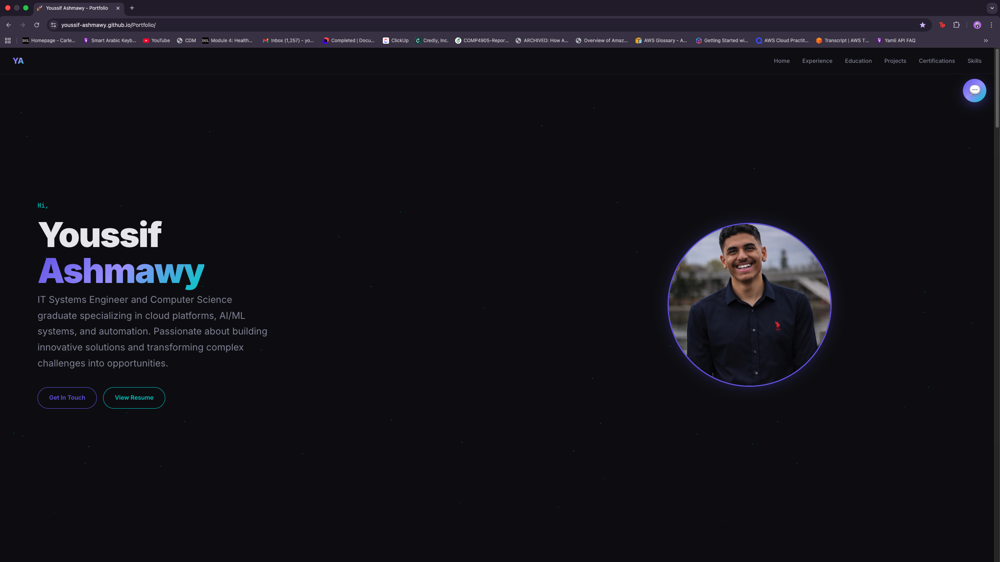
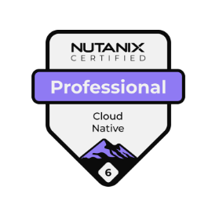
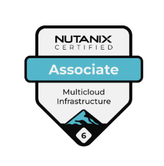
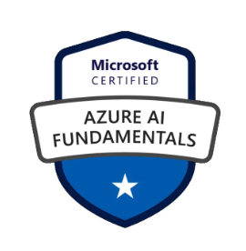

I make self-hosted LLMs answer ten times faster. At BSF I tune vLLM, schedule GPUs and build the Grafana boards that show when something slows down.
Illustrative replay. Same model and GPU with tuned serving; the 10× gap matches the real 90% latency cut at BSF.

Real-time inference with Kafka and XGBoost in a producer-consumer design. Fairlearn monitoring cut Equalized Odds Difference from 1.0 to 0.10 at 85% accuracy. MLflow tracking, Optuna tuning and a Streamlit bias dashboard.






RAG chatbot on FastAPI and Render. GitHub Actions pulls assets from a private repo, injects secrets and rebuilds the vector store on every deploy.

NCP · Cloud NativeNutanix2029-02
Certified AssociateNutanix2029-02
Azure AI FundamentalsMicrosoftno expiry